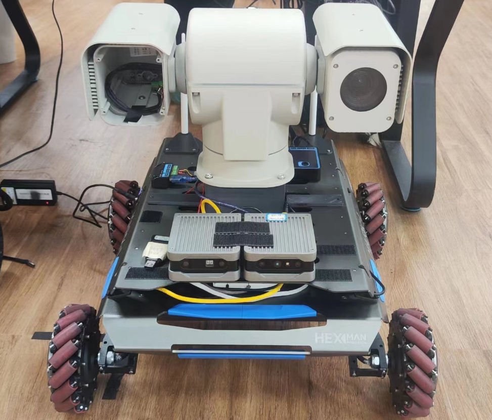
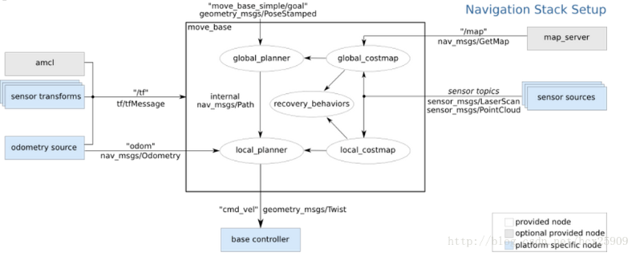
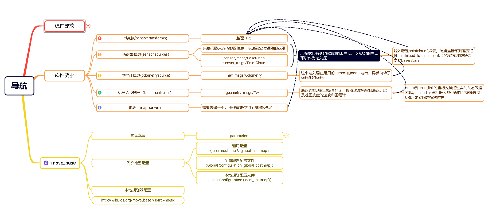
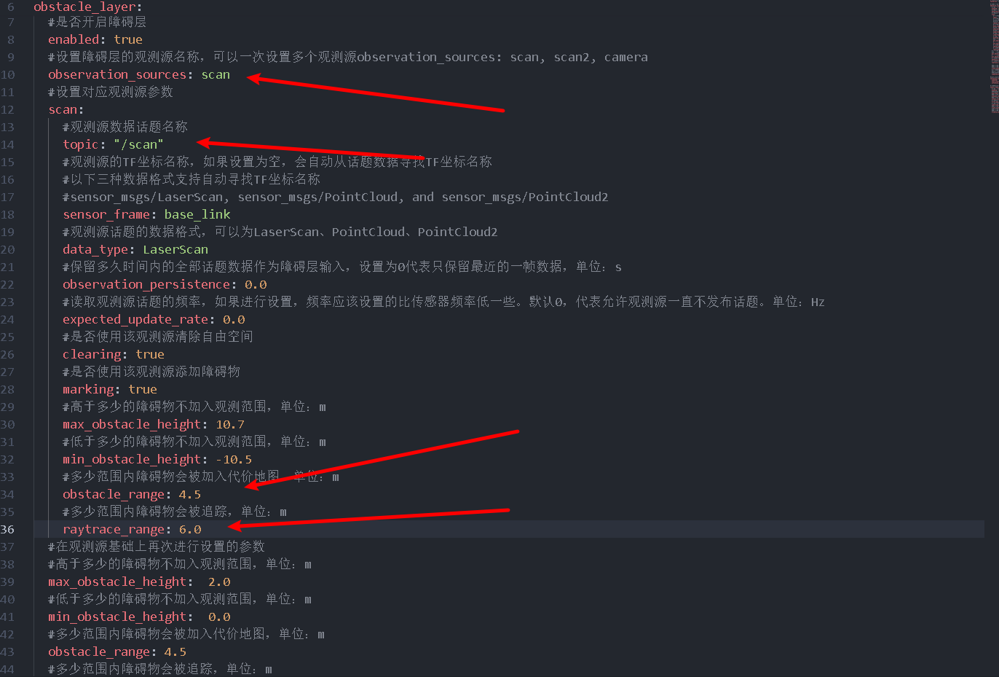

Viobot定位用于导航
注：此教程以轮式机器人作为一个样例，具体的应用还需要用户自己去做更深入的开发。

路径规划部分我们选用轮式机器人比较常用的move_base。
整个架构就是Viobot使用stereo2算法提供机器人的当前位姿，输入到move_base作为规划起点，再给定目标终点，move_base会输出一个/cmd_vel的话题使机器人运动起来。至于/cmd_vel到控制机器人底盘运动（也就是base controller这部分）的实现就要用户自己去实现了，我们先默认都已经可以实现base controller了。

下面是我整理的一张整体的框架图

接下来就是例程的粗略讲解
1.viobot输出信息处理
接收stereo2的位姿和点云，使用TF转换，构建TF树。
1）接收消息，注册回调函数
std::string point_clound_topic;
//点云话题配置接口，可以通过launch文件配置点云输入，默认为TOF
nh_private.param<std::string>("point_clound_topic", point_clound_topic, "/pr_loop/tof_points");
sub_odom = nh.subscribe("/pr_loop/odometry_rect", 50, &VioOdomNodelet::loop_pose_callback, this);
sub_car_odom = nh.subscribe("/odom", 50, &VioOdomNodelet::car_odom_callback, this);
sub_pointcloud = nh.subscribe(point_clound_topic, 50, &VioOdomNodelet::loop_pointclound_callback, this);
2）回调函数处理位姿信息
自己去维护了一个从base_link到vio_odom的动态TF变换
void VioOdomNodelet::loop_pose_callback(const nav_msgs::OdometryPtr &msg){
static tf::TransformBroadcaster odom_broadcaster;//定义tf 对象
geometry_msgs::TransformStamped odom_trans;//定义tf发布时需要的类型消息
nav_msgs::Odometry odom;
odom.header.stamp = msg->header.stamp;
odom.header.frame_id = "vio_odom";
odom.child_frame_id = "base_link";
Eigen::Vector3d position_in_vio(msg->pose.pose.position.x, msg->pose.pose.position.y,msg->pose.pose.position.z);
tf::Quaternion original_quat(msg->pose.pose.orientation.x, msg->pose.pose.orientation.y, msg->pose.pose.orientation.z, msg->pose.pose.orientation.w);
//选转到跟base_link方向一致
tf::Quaternion quat_rotate;
quat_rotate.setRPY(0, -M_PI/2, M_PI/2);
// quat_rotate.setRPY(0,M_PI/2, -M_PI/2);
// Apply the rotations
tf::Quaternion final_quat = original_quat * quat_rotate;
// Convert the final quaternion back to a geometry_msgs Quaternion
geometry_msgs::Quaternion geo_q;
tf::quaternionTFToMsg(final_quat, geo_q);
if(height_charge){//一个将Z轴归零的策略，可根据自己的实际情况配置
frame_z = msg->pose.pose.position.z;
position_in_vio.z() = 0;
odom.pose.pose.position.z = 0;//z轴归零
//这里为了把位姿朝向规整到水平面
vio_quat = geo_q;
// printf("--------------------\npose:\nx:%lf\ny:%lf\nz:%lf\nquat:\nx:%lf\ny:%lf\nz:%lf\nw:%lf\n",msg->pose.pose.position.x,msg->pose.pose.position.y,
// msg->pose.pose.position.z,msg->pose.pose.orientation.x,msg->pose.pose.orientation.y,
// msg->pose.pose.orientation.z,msg->pose.pose.orientation.w);
double yaw = tf::getYaw(vio_quat);
// geometry_msgs::Quaternion geo_q1 = tf::createQuaternionMsgFromYaw(yaw + M_PI / 2);
geometry_msgs::Quaternion geo_q1 = tf::createQuaternionMsgFromYaw(yaw);
odom.pose.pose.orientation = geo_q1;
}
else{
odom.pose.pose.position.z = msg->pose.pose.position.z;
odom.pose.pose.orientation = geo_q;
}
position_in_vio = position_in_vio + t_vio_base_link;
// Coordinate transformation from VIO to base_link
// odom.pose.pose.position.x = position_in_vio.x();
// odom.pose.pose.position.y = position_in_vio.y();
// odom.pose.pose.position.z = position_in_vio.z();
odom.pose.pose.position.x = msg->pose.pose.position.x;
odom.pose.pose.position.y = msg->pose.pose.position.y;
//这里odom的速度可选stereo2输出的速度，也可以选择底盘论速计的速度
// odom.twist.twist.linear.x = msg->twist.twist.linear.x;
// odom.twist.twist.linear.y = msg->twist.twist.linear.y;
odom.twist.twist.linear.x = linear_vx;
odom.twist.twist.linear.y = linear_vy;
odom.twist.twist.linear.z = 0.0;
odom.twist.twist.angular.x = 0.0;
odom.twist.twist.angular.y = 0.0;
odom.twist.twist.angular.z = angular_vz;
// odom.twist.twist.angular.z = msg->twist.twist.angular.z;
odom_trans.header.stamp = msg->header.stamp;
odom_trans.header.frame_id = "vio_odom";
odom_trans.child_frame_id = "base_link";
odom_trans.transform.translation.x = position_in_vio.x();//x坐标
odom_trans.transform.translation.y = position_in_vio.y();//y坐标
odom_trans.transform.translation.z = position_in_vio.z();//z坐标
odom_trans.transform.rotation = odom.pose.pose.orientation;//偏航角
odom_broadcaster.sendTransform(odom_trans);
//区分静止和运动时的协方差
if(msg->twist.twist.linear.y == 0 && msg->twist.twist.linear.x == 0 && msg->twist.twist.angular.z == 0){
memcpy(&odom.pose.covariance, odom_pose_covariance2, sizeof(odom_pose_covariance2));
memcpy(&odom.twist.covariance, odom_twist_covariance2, sizeof(odom_twist_covariance2));
}
else{
memcpy(&odom.pose.covariance, odom_pose_covariance, sizeof(odom_pose_covariance));
memcpy(&odom.twist.covariance, odom_twist_covariance, sizeof(odom_twist_covariance));
}
pub_odom.publish(odom);
}
3）回调函数处理点云信息
把点云划到vio_odom上面，它会根据上面的base_link到vio_odom的动态TF变换变换
void VioOdomNodelet::loop_pointclound_callback(const sensor_msgs::PointCloud2ConstPtr& cloud_msg_in){
sensor_msgs::PointCloud2 cloud_msg_out = *cloud_msg_in;
// Set the frame_id of the output pointcloud to base_link
cloud_msg_out.header.frame_id = "vio_odom";
if(height_charge){
Eigen::Quaterniond q(vio_quat.w, vio_quat.x, vio_quat.y, vio_quat.z);
Eigen::Matrix3d rotation_matrix = q.normalized().toRotationMatrix();
//将Eigen::Matrix3d 手动转换为 tf::Matrix3x3
tf::Matrix3x3 tf_rotation_matrix(rotation_matrix(0, 0), rotation_matrix(0, 1), rotation_matrix(0, 2),
rotation_matrix(1, 0), rotation_matrix(1, 1), rotation_matrix(1, 2),
rotation_matrix(2, 0), rotation_matrix(2, 1), rotation_matrix(2, 2));
double yaw, pitch, roll;
tf_rotation_matrix.getRPY(roll, pitch, yaw);
//创建pitch和roll的逆旋转
Eigen::Matrix3d pitch_matrix_inv = Eigen::AngleAxisd(-pitch, Eigen::Vector3d::UnitY()).toRotationMatrix();
Eigen::Matrix3d roll_matrix_inv = Eigen::AngleAxisd(-roll, Eigen::Vector3d::UnitX()).toRotationMatrix();
Eigen::Matrix3d final_rotation_matrix;
// 应用逆旋转到原始四元数上
if(inv){
final_rotation_matrix = pitch_matrix_inv * roll_matrix_inv;
}
else{
final_rotation_matrix << 1,0,0,0,1,0,0,0,1;
}
sensor_msgs::PointCloud pointcl1;
sensor_msgs::convertPointCloud2ToPointCloud(cloud_msg_out,pointcl1);
for(int i = 0;i < pointcl1.points.size();i++){
Eigen::Vector3d point_eigen(pointcl1.points[i].x, pointcl1.points[i].y, pointcl1.points[i].z);
point_eigen = final_rotation_matrix * point_eigen;
pointcl1.points[i].x = point_eigen.x();
pointcl1.points[i].y = point_eigen.y();
pointcl1.points[i].z = point_eigen.z() - frame_z;
// printf("frame_z = %lf\n",frame_z);
}
sensor_msgs::convertPointCloudToPointCloud2(pointcl1,cloud_msg_out);
}
pub_pointcloud.publish(cloud_msg_out);
}
2.pointcloud转laserscan
其实就是根据原有的开源代码做了一下修改，原有的代码配置了use_inf为false时，当点云的距离大于range_max就不显示了，这样会造成一些刷新上面的困难，所以再输出/scan话题之前加了1.5m的距离，让/scan话题初始就是一个range_max+1.5的扇形，根据障碍物来刷新。
3.move_base配置
1）launch文件
主要是启动map_server加载地图文件和启动move_base并加载了配置文件。
<launch>
<!-- Run the map server -->
<node name="map_server" pkg="map_server" type="map_server" args="$(find nav_robot)/maps/map_office.yaml"/>
<!-- <node name="map_server" pkg="map_server" type="map_server" args="$(find nav_robot)/maps/blank_map.yaml"/> -->
<node pkg="move_base" type="move_base" respawn="false" name="move_base" output="screen">
<rosparam file="$(find nav_robot)/config/mark_1/costmap_common_params.yaml" command="load" ns="global_costmap" />
<rosparam file="$(find nav_robot)/config/mark_1/costmap_common_params.yaml" command="load" ns="local_costmap" />
<rosparam file="$(find nav_robot)/config/mark_1/local_costmap_params.yaml" command="load" />
<rosparam file="$(find nav_robot)/config/mark_1/global_costmap_params.yaml" command="load" />
<rosparam file="$(find nav_robot)/config/mark_1/move_base_teb_params.yaml" command="load" />
<rosparam file="$(find nav_robot)/config/mark_1/teb_local_planner_params.yaml" command="load" />
</node>
<!-- <node name="rviz" pkg="rviz" type="rviz" args="-d $(find nav_robot)/rviz_cfg/nav_test.rviz" /> -->
</launch>
2）地图文件
这个需要用户把自己的场景先建里一个地图先验，可以是使用雷达等设备，也可以使用viobot（这个建图要单独开一篇来讲）。
3）move_base配置文件
每个文件的参数都有详细注释，用户可以自行查看参数的意义和选择配置。
costmap_common_params.yaml这个有一part需要重点说明的：
障碍物层输入是/scan ，不使用pointcloud是因为move_base底层代码逻辑，避障是使用世界系的点云的，其实避障使用body系点云应该是更合理的，所以我们把一定高度范围的pointcloud转成了/scan；其次是obstacle_range和raytrace_range两个参数，它会跟踪raytrace_range范围内的障碍物，但是只有在obstacle_range范围内的障碍物点才会被加到代价地图，所以我们前面在转/scan的出话题的时候加了那个1.5m就是为了把大部分点定到obstacle_range和raytrace_range中间，使得障碍物能够快速被刷新。

range_max